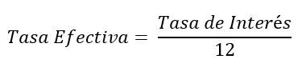
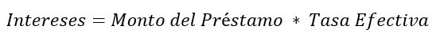

Este método de pago se caracteriza en que por cada periodo solo se pagaran intereses, pero en el último periodo, se pagan los intereses más el monto del préstamo.
Para poder hacer la tabla de amortización por este método, primero es necesario calcular la tasa de interés efectiva. La cual la calculamos dividiendo la tasa de interés entre 12. 
Despues calculamos el monto de los intereses, que estaremos pagando cada periodo multiplicando el monto del préstamo por la tasa efectiva: 
Una vez que calculamos los intereses, llenamos la tabla para todos los periodos de tal manera que el monto del pago y de los intereses será el mimmo, pero en el último periodo sumaremos el monto del préstamo, liquidando asi la deuda.